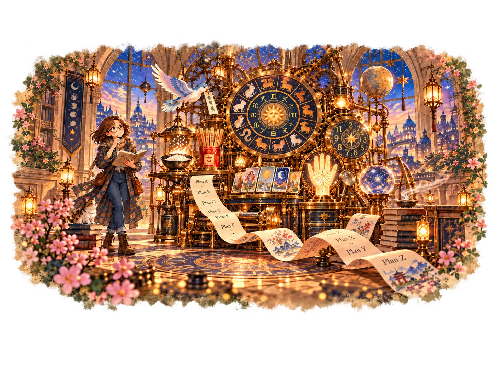
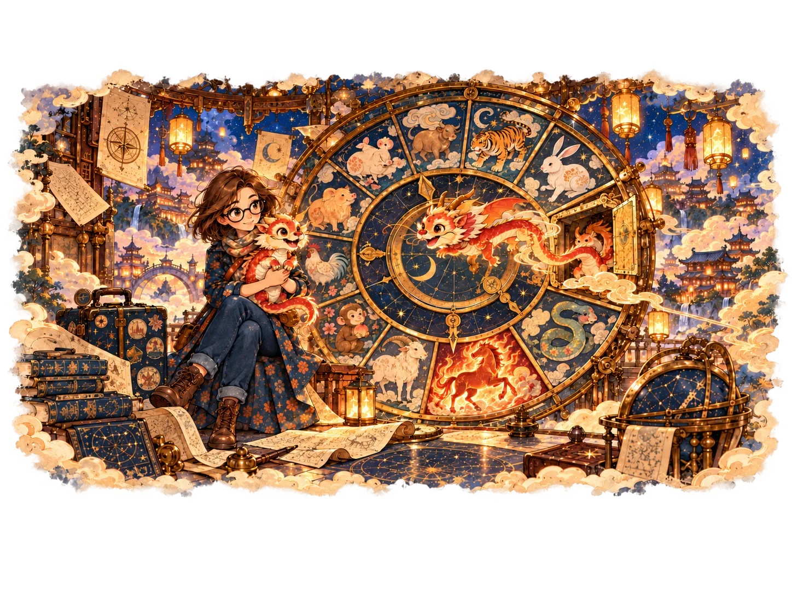
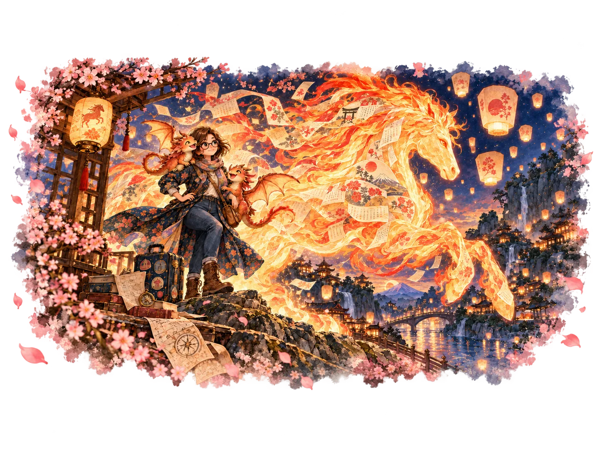
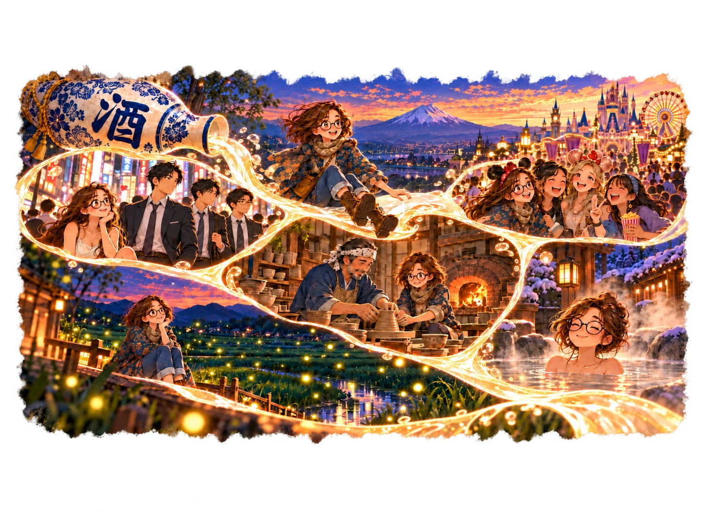
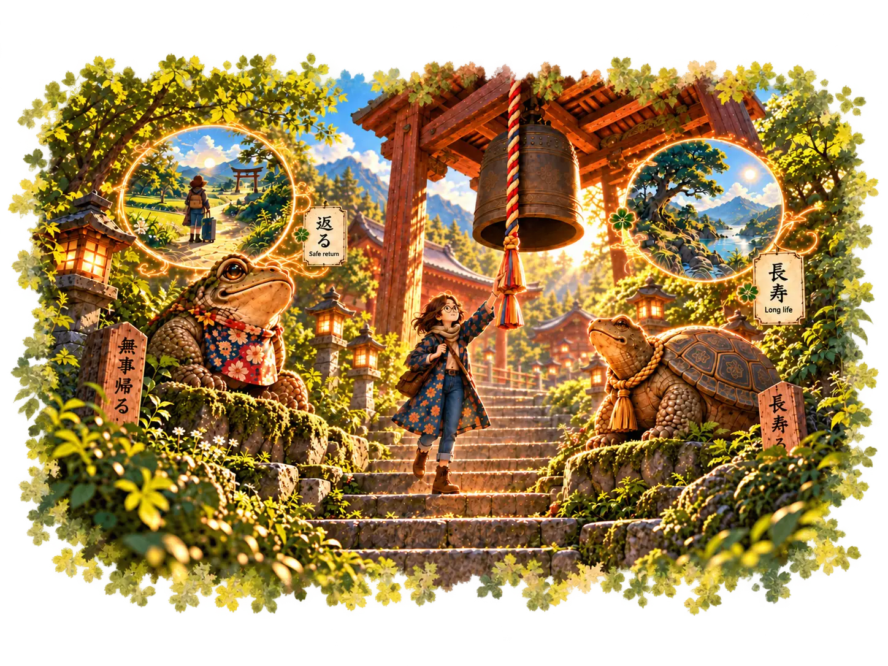
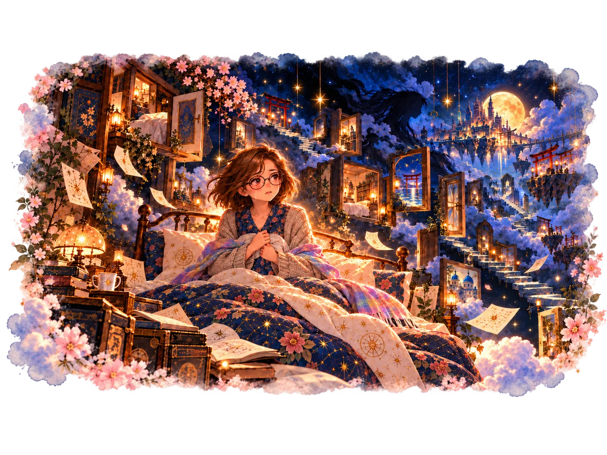
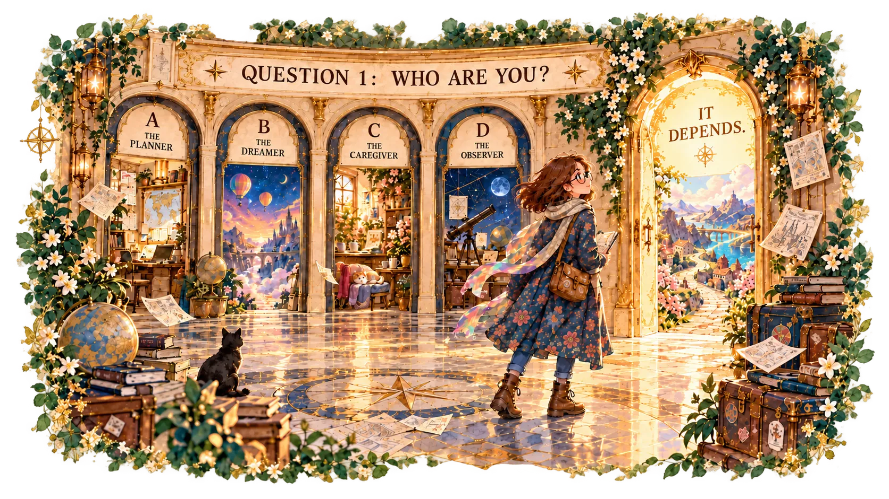
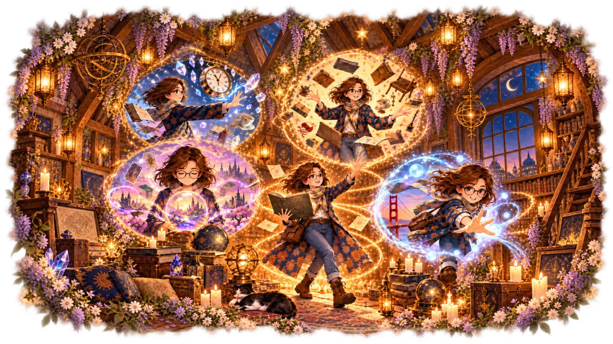
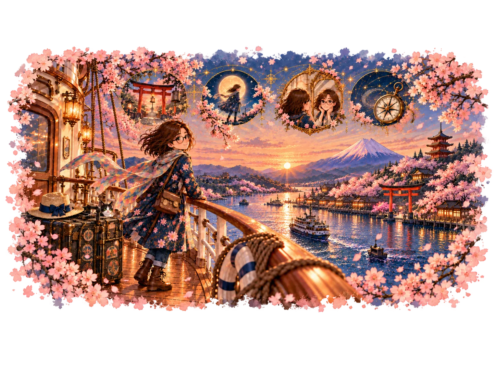

The Machine of Many Answers

I make Plans A to Z because I hate uncertainty. Which probably explains my fascination with fortune tellers.
A bird in Hong Kong. Fortune sticks in Taiwan. Rice in Brisbane. Tarot, numerology and palm reading. I’ve tried rather a lot of ways to find out what might happen next.
And here’s the funny thing. I’m Catholic.
Mother of Dragons: The Zodiac Wheel

And yes, my curiosity once became rather practical.
When we were planning our family, I actually consulted a Chinese zodiac compatibility chart. It influenced how I thought about the timing of our next child.
All because a Catholic friend declined to become my son’s godmother over their supposedly incompatible zodiac signs.
Erm. Yes.
One Belief, Two Worlds: The Fire Horse

I ended up with twin Dragons. Call me Khaleesi.
Actually, don’t.
Then I discovered that in Japan, an old superstition surrounding girls born in the Year of the Fire Horse had influenced family-planning decisions on a national scale. Births fell dramatically in 1966.
The Fire Horse returned in 2026.
One belief. Very different consequences.
The Japan I Have Collected

Japan is the country I’ve visited more than any other.
There were summer streets full of businessmen in suits while I was melting in spaghetti straps, friends at Disneyland, a working potter in Omagari, fireflies over rice paddies and my first onsen.
And sake. Let’s just say I haven’t touched it since a memorable night during that homestay.
Then I came across a rather unusual Japan cruise.
I initially thought astrology and fortune-telling were part of the programme.
I was wrong.
But the travel editor in me couldn’t resist investigating. I studied the itinerary, looked into the speakers and started pulling the whole thing apart.
And somewhere along the way, I fell for the very hook I spend my working hours trying to write.
The Bell, Frog and Turtle

During a homestay in Kawachinagano, my hosts brought me to what I think was a Shinto shrine.
I remember a frog and a turtle along the pathway. Only later did I learn that frogs are often associated with returning safely, while turtles symbolise longevity.
Were those the intended meanings there? I haven’t the faintest idea. But it made me wonder: how many stories have I walked past in Japan without realising?
That’s why Tracey Ash’s exploration of Japanese mythology and spiritual traditions interests me.
My question for Tracey: How much of Japan’s ancient mythology still influences everyday life today?
The Dream That Followed Me Home

I’ve had dreams so vivid that I’ve woken up sobbing, convinced for a moment that what I’d dreamt really happened.
Inception, anyone?
How can something that never actually happened leave me feeling as though it did?
Samantha Treasure explores dreams, out-of-body experiences and Eastern shamanism. Of the four speakers, her subject might interest me most.
My question for Samantha: Are dreams trying to tell us something, or are we the ones giving them meaning?
None of the Above: It Depends

Who am I?
I’ve asked that question before, including on Substack. And I’ve taken personality tests, although I can’t remember the results.
But here’s what bothers me.
What if my answer isn’t A, B, C or D?
What if it’s it depends?
My Substack series, Box Too Small, is where I explore things I’ve read that leave me with far too much to say. And here I am, wondering whether nine personality types could possibly explain the complexity of who we are.
Which is why Peter Maloney’s Enneagram session caught my attention.
My question for Peter: How accurately can a personality framework describe someone who doesn’t always fit the available answers?
If You Could Have One Superpower?

Kerrie Erwin’s session explores psychic abilities and recognising the powers within ourselves.
Naturally, my mind went straight to Charmed. LOL.
Piper was always my favourite. And you’d think I’d want Phoebe’s premonitions, given my love of fortune tellers. Except knowing the future isn’t the same as being able to change it.
Instead, I’d choose Paige’s teleportation. Imagine travelling anywhere without airports, queues or flight delays!
I guess what I really want isn’t the ability to predict the future. It’s the freedom to decide where I go next.
My question for Kerrie: How do we distinguish intuition, personal belief and abilities we might actually be able to develop?
The Journey: Land and Sea

Four speakers. Four questions.
Why do cultures believe what they believe?
What are our dreams trying to tell us?
Can a personality framework explain who we are?
And how do we know what abilities lie within us?
Different subjects, but questions I’ve found myself wondering about for years. And somehow, they’ve all come together on a journey through Japan by land and sea.
I’ve travelled extensively around Japan, but always by land. If time and money were no object, I’d be seriously tempted.